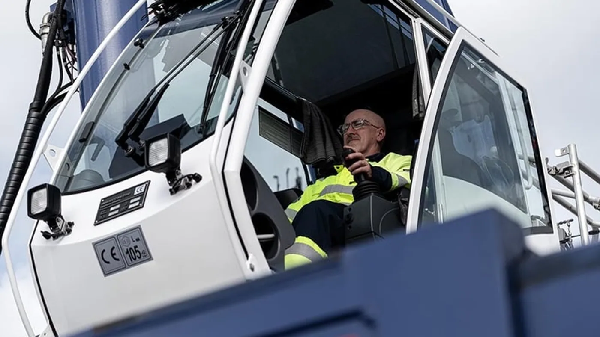

Webfleet difundió el 27 de agosto de 2026 un caso de implementación en ASCO, empresa de logística y gestión de materiales. El despliegue informado comprende 383 unidades entre utilitarios, camiones y remolques: no se trata de 383 camiones.
Según el comunicado, alrededor de 280 remolques incorporaron monitoreo electrónico del rendimiento de frenado y 102 camiones cuentan con descarga remota del tacógrafo. También se utilizan indicadores de conducción, como velocidad y ralentí, para orientar el seguimiento de los equipos.
Webfleet proyecta un ahorro anual de 194.000 libras esterlinas. Es una estimación del proveedor, no un ahorro ya comprobado durante un año completo ni una cifra transferible a otra flota. La noticia describe una experiencia británica; no confirma un despliegue de ASCO con estas características en Argentina.
De reunir datos a resolver problemas
Análisis de Zabala Repuestos. Una plataforma puede mostrar muchas variables y aun así aportar poco si nadie sabe qué hacer con ellas. El cambio más importante suele estar en el proceso: quién revisa una alerta, cómo se asigna una comprobación y dónde queda documentada su resolución.
Para una empresa de transporte, conviene empezar por problemas identificables. Por ejemplo, información que llega tarde al taller, registros incompletos o dificultad para coordinar revisiones. Elegir un objetivo concreto permite evaluar si la herramienta ayuda, en lugar de medir su valor por la cantidad de pantallas disponibles.
Monitorear no equivale a autorizar la circulación
Un sistema de seguimiento puede aportar información al mantenimiento, pero no debe interpretarse como permiso automático para seguir trabajando con una anomalía. La respuesta ante una advertencia debe respetar los procedimientos técnicos y de seguridad que correspondan a la unidad.
Tampoco corresponde trasladar al país conclusiones sobre inspecciones basadas en el marco británico. Cualquier modificación de un plan local requiere comprobar las exigencias aplicables y las instrucciones del fabricante. Esta nota no propone reducir controles ni reemplazar una revisión profesional por una lectura de pantalla.

Cómo comprobar una proyección de ahorro
El primer paso es separar lo estimado de lo observado. Un presupuesto puede anticipar menos horas administrativas o menos interrupciones, pero el resultado requiere registros comparables. Es importante conservar la situación de partida y definir qué gastos se incluirán en la evaluación.
Luego hay que revisar si cambió el trabajo. Una baja de consumo durante un período con menos carga no demuestra necesariamente una mejora de conducción. Lo mismo ocurre con los tiempos de taller si se renovaron unidades o se modificaron recorridos durante la comparación.
Una alerta necesita responsable y cierre
Un esquema sencillo puede ordenar el seguimiento: registrar el aviso, asignarlo a una persona, documentar la revisión y confirmar su cierre. No es un procedimiento de reparación; es una forma de evitar que la información quede dispersa entre mensajes, llamados y planillas.
También conviene distinguir prioridades. El equipo responsable debe saber qué situaciones requieren atención inmediata y cuáles forman parte de una revisión programada, de acuerdo con criterios técnicos aprobados. La plataforma debería apoyar esas decisiones, no improvisarlas por cuenta de la empresa.
Comparar conductores exige contexto
Si se utilizan indicadores de conducción, interesa que las comparaciones contemplen vehículo, tarea y recorrido. Dos personas con trabajos distintos pueden producir registros diferentes sin que eso explique por sí solo la calidad de su desempeño.
La comunicación interna también importa. Antes de utilizar los datos, conviene explicar para qué se recogen, quién los revisa y cómo se corrigen registros incorrectos. Un enfoque de mejora necesita conversaciones y capacitación, además de indicadores. Una clasificación aislada no reemplaza ese trabajo.
Qué consultar antes de contratar una solución
- Compatibilidad con las unidades y equipos existentes.
- Alcance de la instalación y soporte disponible.
- Responsables de revisar y atender las alertas.
- Acceso a los registros y posibilidad de exportarlos.
- Costos iniciales, recurrentes y de capacitación.
- Objetivos medibles y duración de una prueba piloto.
El caso ASCO pone sobre la mesa una pregunta útil para cualquier flota argentina: cómo transformar información en acciones que queden registradas. Su interés no está en prometer el mismo ahorro, sino en evaluar si un proceso más ordenado puede mejorar la coordinación entre conducción, operaciones y mantenimiento.